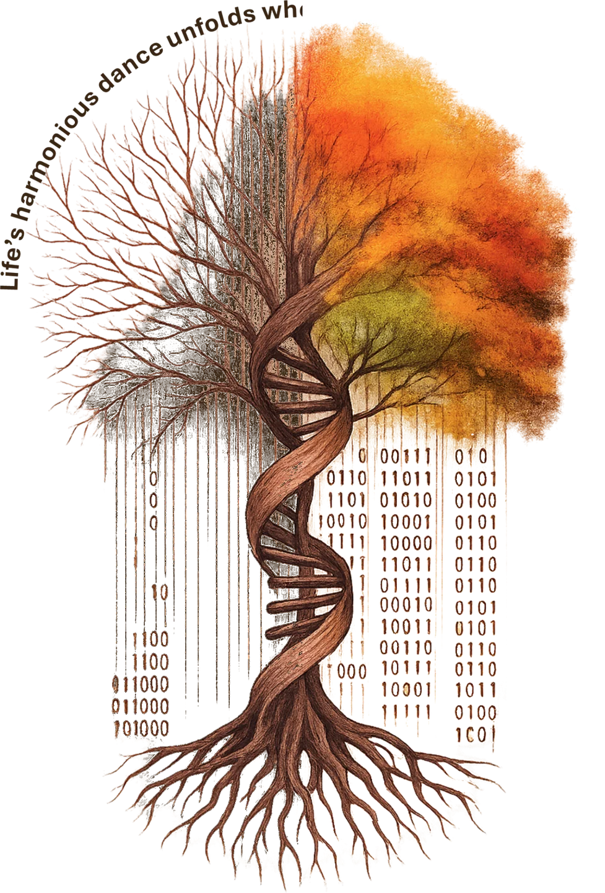

The living grammar of proteins — variation, constraint, and function, read at proteome scale.
See our research →
AI models — including ESMRank — that turn billions of mutations into one transferable signal of constraint.
Software & code →Like the tree of life — rooted in complexity, branching toward discovery — our research integrates DNA sequencing and artificial intelligence to reveal how genetic variation shapes human health. By turning binary code into biological insight, we work to accelerate diagnoses, guide therapies, and expand the promise of precision medicine.
Real sequencing data, real disease — from single cells to whole proteomes.
Protein language models that read mutations the way evolution wrote them.
Turning constraint into interpretation — diagnoses, therapies, better proteins.
Self-supervised protein models give us a score for every possible mutation. Our work makes those scores transferable, interpretable, and tied to real biology.
Language-model scores for all ~450M possible human missense variants — no homologs, no clinical labels required.
ESMRank reconciles ~1,100 overlapping deep mutational scans (>2M variants) into one transferable axis of constraint — variant soundness.
Ranking and designing sequence variants for stability, fitness and function with protein foundation models — and generative models that build new protein 3D structures.
Finding variants with hybrid long/short-read sequencing, interpreting them with AI, and linking them to folding, function and therapeutic rescue — from CFTR in cystic fibrosis to inherited retinal disease.
Targeted long-read sequencing and phasing in KIF1A-associated neurological disorder, to tell which patients carry an allele configuration compatible with allele-specific antisense therapy — and to find new SNPs that could extend it to more patients. In collaboration with, and with thanks to, KIF1A Italia.
Long reads and a dedicated pipeline to reconstruct what therapeutic genome editing actually wrote into the genome: where the donor DNA integrated, in which orientation, whether it is complete, and how often — a structural safety check for gene therapy.
Everything we publish ships with code. Below: a live read of the mutational landscape our models score, and the tools behind our work — each with install notes and citation on the Software page.
A learning-to-rank predictor of missense variant effects, trained on ~1,100 overlapping deep mutational scans fused into one consensus score — variant soundness. ESM2 embeddings plus physicochemical features; tracks ClinVar pathogenicity and CFTR folding, activity and drug response.
A small group of computer scientists and biologists working across machine learning, genomics and protein science.
PI at TIGEM and tenure-track Assistant Professor at Scuola Superiore Meridionale. Works at the interface of AI, genomics and protein biology. Editorial Board member, Scientific Data. From January 2027, Head of the TIGEM Bioinformatics Core.
PhD TIGEM / Univ. Naples → IEO Milan → King's College London → TIGEM PI · SSM
PhD in Computational and Quantitative Biology, University of Naples. Lead author on ESMRank — best poster at EMBO | EMBL "AI and biology" and best talk at ISCB-UK, both 2026.
Long-read haplotype phasing in KIF1A-associated neurological disorder, to match patients with allele-specific antisense therapies.
Genome integrity after gene editing: long-read reconstruction of where and how therapeutic DNA integrates.
PhD in Systems Medicine (SEMM), second year. Generative models of protein 3D structures: flow matching that starts from homology-informed source structures.
Now postdoctoral researcher in the Califano Lab, Columbia University.
Now postdoctoral researcher in the Califano Lab, Columbia University.
Single-cell genomics and tumour heterogeneity; lead author of the anti-EGFR lineage-tracing study (Genome Medicine, 2024).
Now a PhD student at the University of Pamplona. Co-author of the retinitis pigmentosa gene-insertion study (Cell Reports Medicine, 2026).
We welcome motivated students and postdocs in machine learning, computational biology and protein science — and collaborations on variant interpretation and protein engineering. Reach out with a short note on what you'd like to work on.